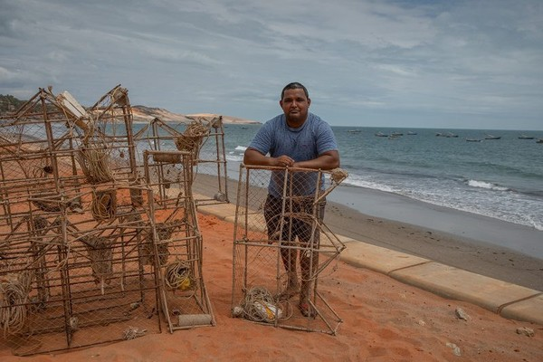

As lagostas são criaturas fascinantes e cheias de curiosidades
Lagostas podem viver mais de 100 anos! Elas não envelhecem da mesma forma que outros animais, pois produzem uma enzima (telomerase) que repara seu DNA continuamente. O sangue da lagosta é azul devido à presença de hemocianina, uma proteína rica em cobre que transporta oxigênio (nos humanos, é a hemoglobina, que contém ferro e dá a cor vermelha). Elas precisam trocar de carapaça (muda) para crescer. Nesse processo, ficam extremamente vulneráveis até que a nova carapaça endureça.

Lagostas têm uma garra maior e mais forte (para esmagar) e outra menor e afiada (para cortar). Curiosamente, se perderem uma, podem desenvolver uma nova com a função oposta! Elas nadam para trás quando precisam fugir rapidamente, dobrando a cauda sob o corpo. Mas normalmente andam para frente no fundo do mar. Em cativeiro, podem se tornar canibais, mas na natureza isso é raro. Normalmente se alimentam de peixes, moluscos e outros invertebrados.
Lagostas não sobrevivem em água doce ou gelada. Se expostas a temperaturas muito baixas, entram em choque e morrem. O coração da lagosta fica atrás da cabeça! E se parar, um simples estímulo (como um choque) pode fazê-lo voltar a bater. Elas podem regenerar patas, garras e até olhos perdidos, mas demora várias mudas para ficarem como novas. No século XIX, lagostas eram consideradas "comida de prisioneiros e pobres" nos EUA. Só no século XX virou um prato sofisticado.
Métodos Eficazes para Pescar Lagosta
A pesca de lagosta é uma atividade tradicional em muitas regiões costeiras, tanto para fins comerciais quanto recreativos. Conhecer as técnicas adequadas é essencial para garantir uma captura eficiente e sustentável. Neste artigo, exploraremos os principais métodos utilizados para pescar lagosta.
1. Pesca com Covos (Armadilhas)
O método mais comum e sustentável para capturar lagostas é o uso de covos, também conhecidos como armadilhas ou pots.
Funcionamento:
Os covos são gaiolas de metal ou madeira com uma entrada em forma de funil, que permite a entrada da lagosta, mas dificulta sua saída.
Iscas:
Peixes mortos (como sardinha ou cavala) são usados como atrativos.
Localização:
São colocados no fundo do mar, em áreas rochosas ou próximas a recifes, onde as lagostas se escondem.
Vantagens:
Método seletivo, que causa pouco impacto ao meio ambiente.
2. Mergulho Livre ou com Escafandro
Em algumas regiões, lagostas são capturadas manualmente por mergulhadores.
Vantagens:
Permite a seleção de lagostas no tamanho certo, evitando a captura de exemplares jovens.
Técnica:
O mergulhador busca as lagostas em fendas de rochas ou corais, usando um gancho para retirá-las com cuidado.
Regulamentação:
Em muitos lugares, é proibido o uso de equipamentos de mergulho autônomo (SCUBA) para pesca comercial de lagosta, visando evitar a sobrepes
3. Pesca com Redes
Embora menos comum, algumas técnicas de pesca com redes podem ser utilizadas:
Redes de Emalhar:
Usadas em águas mais profundas, mas com risco de capturar outras espécies acidentalmente.
Cerco em Áreas Rasas:
Em locais com muitas lagostas, redes podem ser utilizadas para cercá-las, mas esse método é menos seletivo.
4. Pesca com Gancho (Foques)
Em algumas culturas tradicionais, um gancho longo (chamado de "foque" no Brasil) é usado para fisgar lagostas escondidas em buracos.
Técnica:
O pescador insere o gancho na toca e puxa a lagosta com cuidado.
Desvantagem:
Pode danificar o animal se não for feito corretamente.
5. Captura Noturna (À Mão)
Alguns pescadores aproveitam o fato de as lagostas saírem à noite para se alimentar e as capturam manualmente em águas rasas, usando lanternas e luvas para proteção.
6. Uso de Compressores (Pesca com Mergulho sem Regulamentação)

Risco:
Mergulhadores utilizam compressores de ar caseiros, muitas vezes em grandes profundidades, para capturar lagostas manualmente.
Consequências:
Acidentes fatais (doença descompressiva, embolia pulmonar).
Considerações Importantes
Tamanho Mínimo:
Respeite as regulamentações locais sobre o tamanho mínimo para captura.
Período de Defeso:
Evite pescar durante a época de reprodução.
Licenças:
Em muitos países, é necessário ter autorização para pescar lagosta comercialmente.
Conclusão
A pesca de lagosta exige técnicas específicas para garantir a sustentabilidade da espécie. Entre os métodos mais utilizados, os covos e o mergulho manual são os mais recomendados por seu baixo impacto ambiental. Sempre siga as normas de pesca responsável para preservar esse valioso recurso marinho. Se você pratica ou pretende começar a pescar lagosta, informe-se sobre as leis locais e adote boas práticas para contribuir com a conservação dos oceanos.
Então é isso! Espero que você tenha gostado do nosso artigo com essa curiosidade sobre a pesca da Lagosta e curiosidades sobre esse crustáceo.